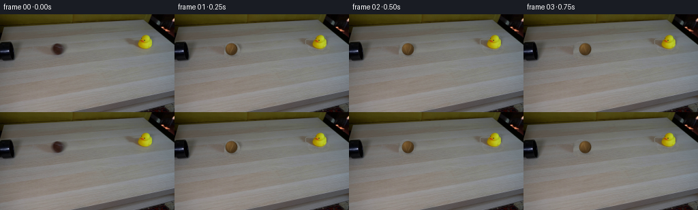
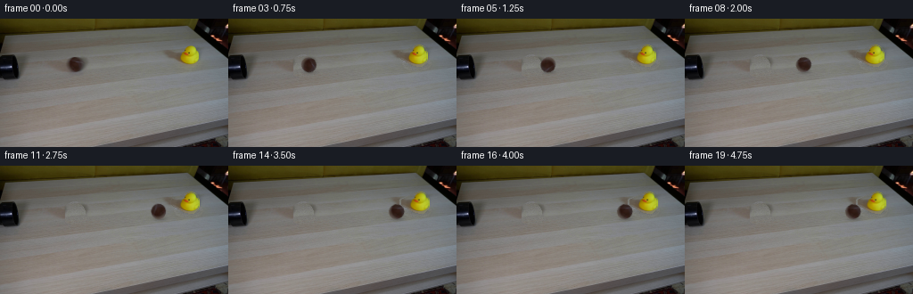
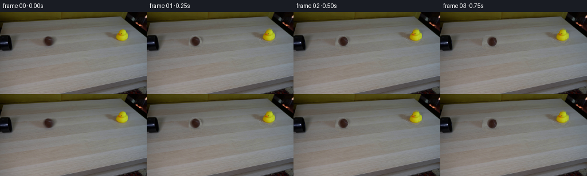

CODING AGENTS AS PIXEL WORLD MODELS
traex/DeepSeek-V4.1-Flash · 0007
点击播放 · 原生 RGB 像素
逐轮保存的候选
回放视频、检查图与代码变化。
每份候选均可单独播放。实际图片检查记录在下方工具轨迹中。
候选 01播放与检查图
点击播放 · 原生 RGB 像素

展开代码变化
--- 上一保存版本
+++ 本次保存版本
@@ -0,0 +1,305 @@
+from pathlib import Path
+
+import av
+import cv2
+import numpy as np
+from PIL import Image
+
+import artifact_io
+
+
+ROOT = Path(__file__).resolve().parent
+N_FRAMES = 20
+WIDTH, HEIGHT = 256, 144
+FPS = 4
+
+
+def _ellipse_mask(shape, center, axes):
+ mask = np.zeros(shape[:2], np.uint8)
+ cv2.ellipse(mask, center, axes, 0, 0, 360, 255, -1)
+ return mask
+
+
+def _patch_fill(image, removal, shift_x):
+ """Fill a small occluder from nearby matching surface texture."""
+ h, w = removal.shape
+ yy, xx = np.mgrid[:h, :w]
+ sx = np.clip(xx + shift_x, 0, w - 1)
+ sample = image[yy, sx]
+
+ hard = (removal > 0).astype(np.float32)
+ alpha = cv2.GaussianBlur(hard, (3, 3), 0.55)
+ alpha = np.clip(alpha * 1.35, 0.0, 1.0)
+
+ filled = image.astype(np.float32) * (1.0 - alpha[..., None])
+ filled += sample.astype(np.float32) * alpha[..., None]
+ return np.clip(filled, 0, 255).astype(np.uint8)
+
+
+def _duck_masks(source):
+ hsv = cv2.cvtColor(source, cv2.COLOR_RGB2HSV)
+ x0, x1, y0, y1 = 193, 227, 27, 56
+ roi = hsv[y0:y1, x0:x1]
+ h, s, v = cv2.split(roi)
+
+ colorful = (
+ (s > 48)
+ & (v > 32)
+ & (((h >= 10) & (h <= 52)) | ((h >= 170) & (s > 80)))
+ ).astype(np.uint8)
+ colorful = cv2.morphologyEx(
+ colorful, cv2.MORPH_CLOSE, cv2.getStructuringElement(cv2.MORPH_ELLIPSE, (3, 3))
+ )
+
+ count, labels, stats, _ = cv2.connectedComponentsWithStats(colorful, 8)
+ chosen = np.zeros_like(colorful)
+ best = -1
+ best_area = 0
+ for label in range(1, count):
+ area = int(stats[label, cv2.CC_STAT_AREA])
+ if area > best_area:
+ best_area = area
+ best = label
+ if best >= 0:
+ chosen[labels == best] = 1
+
+ local = np.zeros((y1 - y0, x1 - x0), np.uint8)
+ cv2.ellipse(local, (7, 16), (4, 3), 0, 0, 360, 1, -1)
+ local = np.maximum(local, chosen)
+ local = cv2.morphologyEx(
+ local, cv2.MORPH_CLOSE, cv2.getStructuringElement(cv2.MORPH_ELLIPSE, (3, 3))
+ )
+
+ points = cv2.findNonZero(local)
+ hull = cv2.convexHull(points)
+ local = np.zeros_like(local)
+ cv2.drawContours(local, [hull], -1, 1, -1)
+
+ object_mask = np.zeros(source.shape[:2], np.uint8)
+ object_mask[y0:y1, x0:x1] = local * 255
+
+ removal = object_mask.copy()
+ shadow = _ellipse_mask(source.shape, (211, 50), (15, 7))
+ removal = np.maximum(removal, shadow)
+ removal = cv2.dilate(
+ removal, cv2.getStructuringElement(cv2.MORPH_ELLIPSE, (3, 3)), iterations=1
+ )
+ return object_mask, removal
+
+
+def _clean_plate(source):
+ ball_removal = _ellipse_mask(source.shape, (83, 52), (11, 11))
+ ball_removal = np.maximum(
+ ball_removal, _ellipse_mask(source.shape, (85, 59), (13, 5))
+ )
+ ball_removal[:, :74] = 0
+ ball_removal = cv2.dilate(
+ ball_removal,
+ cv2.getStructuringElement(cv2.MORPH_ELLIPSE, (3, 3)),
+ iterations=1,
+ )
+
+ duck_object, duck_removal = _duck_masks(source)
+ plate = _patch_fill(source, ball_removal, 24)
+ plate = _patch_fill(plate, duck_removal, -31)
+
+ # Preserve a tiny amount of the original film grain in the reconstructed patches.
+ grain = np.random.default_rng(7).normal(0, 1.7, source.shape[:2])
+ for mask in (ball_removal, duck_removal):
+ soft = cv2.GaussianBlur((mask > 0).astype(np.float32), (3, 3), 0.7)
+ plate = np.clip(
+ plate.astype(np.float32) + grain[..., None] * soft[..., None],
+ 0,
+ 255,
+ ).astype(np.uint8)
+ return plate, duck_object, duck_removal
+
+
+def _extract_duck(source, mask):
+ alpha = cv2.GaussianBlur(mask.astype(np.float32) / 255.0, (3, 3), 0.45)
+ rgba = np.dstack([source, np.clip(alpha * 255, 0, 255).astype(np.uint8)])
+ return rgba
+
+
+def _warp_duck(rgba, dx, dy, angle):
+ h, w = rgba.shape[:2]
+ matrix = cv2.getRotationMatrix2D((211.0, 52.0), angle, 1.0)
+ matrix[0, 2] += dx
+ matrix[1, 2] += dy
+ return cv2.warpAffine(
+ rgba,
+ matrix,
+ (w, h),
+ flags=cv2.INTER_LINEAR,
+ borderMode=cv2.BORDER_CONSTANT,
+ borderValue=(0, 0, 0, 0),
+ )
+
+
+def _soft_shadow(image, center, axes, opacity):
+ h, w = image.shape[:2]
+ yy, xx = np.mgrid[:h, :w]
+ cx, cy = center
+ ax, ay = axes
+ field = ((xx - cx) / ax) ** 2 + ((yy - cy) / ay) ** 2
+ shade = np.exp(-1.7 * field) * opacity
+ shade = cv2.GaussianBlur(shade.astype(np.float32), (3, 3), 0.55)
+ out = image.astype(np.float32) * (1.0 - shade[..., None])
+ return np.clip(out, 0, 255).astype(np.uint8)
+
+
+def _render_ball(base, cx, cy, radius, roll):
+ scale = 4
+ size = int(np.ceil(radius * 2 + 5))
+ hi = size * scale
+ yy, xx = np.mgrid[:hi, :hi]
+ px = (xx + 0.5) / scale - size / 2.0
+ py = (yy + 0.5) / scale - size / 2.0
+ rr = np.sqrt(px * px + py * py)
+
+ # Slight fibrous radius variation keeps the silhouette from looking vector-perfect.
+ theta = np.arctan2(py, px)
+ fiber = 0.18 * np.sin(theta * 29.0) + 0.10 * np.sin(theta * 47.0 + 1.1)
+ edge_r = radius + fiber
+ alpha = np.clip((edge_r - rr) * scale + 0.5, 0.0, 1.0)
+
+ nx = px / radius
+ ny = py / radius
+ nz = np.sqrt(np.clip(1.0 - nx * nx - ny * ny, 0.0, 1.0))
+ lon = np.arctan2(nx, np.maximum(nz, 1e-4)) + roll
+ lat = np.arcsin(np.clip(ny, -1.0, 1.0))
+
+ felt = (
+ 0.58
+ + 0.18 * np.sin(lon * 19.0 + lat * 7.0)
+ + 0.12 * np.sin(lon * 37.0 - lat * 17.0 + 0.8)
+ + 0.08 * np.sin(lon * 67.0 + lat * 31.0)
+ )
+ seam_a = np.exp(-((np.sin(lon * 2.0 + 0.55 * np.sin(lat * 2.0))) / 0.105) ** 2)
+ seam_b = np.exp(-((np.cos(lon * 2.0 - 0.45 * np.sin(lat * 2.0))) / 0.13) ** 2)
+ seam = np.clip((seam_a + 0.55 * seam_b) * (0.35 + 0.65 * nz), 0.0, 1.0)
+
+ light = np.array([-0.48, -0.60, 0.64], dtype=np.float32)
+ light /= np.linalg.norm(light)
+ diffuse = np.clip(nx * light[0] + ny * light[1] + nz * light[2], 0.0, 1.0)
+ rim = np.clip((1.0 - nz) * 1.35, 0.0, 1.0)
+
+ base_color = np.array([125.0, 91.0, 48.0], dtype=np.float32)
+ color = base_color[None, None, :] * (0.58 + 0.35 * diffuse[..., None])
+ color *= 0.87 + 0.18 * felt[..., None]
+ color = color * (1.0 - 0.12 * rim[..., None])
+ color += seam[..., None] * np.array([31.0, 30.0, 20.0], dtype=np.float32)
+ color += (diffuse**12)[..., None] * np.array([12.0, 10.0, 5.0], dtype=np.float32)
+ color = np.clip(color, 0, 255)
+
+ rgba_hi = np.dstack([color, alpha * 255.0]).astype(np.uint8)
+ rgba = cv2.resize(rgba_hi, (size, size), interpolation=cv2.INTER_AREA)
+
+ out = base.astype(np.float32)
+ x0 = int(round(cx - size / 2.0))
+ y0 = int(round(cy - size / 2.0))
+ x1 = min(WIDTH, x0 + size)
+ y1 = min(HEIGHT, y0 + size)
+ sx0 = max(0, -x0)
+ sy0 = max(0, -y0)
+ sx1 = sx0 + (x1 - x0)
+ sy1 = sy0 + (y1 - y0)
+ patch = rgba[sy0:sy1, sx0:sx1]
+ a = patch[..., 3:4].astype(np.float32) / 255.0
+ region = out[y0:y1, x0:x1]
+ region[:] = region * (1.0 - a) + patch[..., :3].astype(np.float32) * a
+ return np.clip(out, 0, 255).astype(np.uint8)
+
+
+def _composite_duck(frame, duck_rgba):
+ alpha = duck_rgba[..., 3:4].astype(np.float32) / 255.0
+ out = frame.astype(np.float32)
+ out = out * (1.0 - alpha) + duck_rgba[..., :3].astype(np.float32) * alpha
+ return np.clip(out, 0, 255).astype(np.uint8)
+
+
+def _ball_state(frame_index):
+ t = frame_index / FPS
+ contact_time = 2.9
+ if t < contact_time:
+ x = 83.0 + 12.5 * t * t
+ else:
+ tau = t - contact_time
+ x = 188.2 - 0.55 * np.sin(7.0 * tau) * np.exp(-3.0 * tau)
+ x = min(x, 188.2)
+ y = 51.6 + 0.12 * np.sin(11.0 * t) * (t < contact_time)
+ roll = -(x - 83.0) / 8.9
+ return x, y, roll
+
+
+def _duck_state(frame_index):
+ t = frame_index / FPS
+ contact_time = 2.9
+ if t < contact_time:
+ return 0.0, 0.0, 0.0
+ tau = t - contact_time
+ push = 2.15 * (1.0 - np.exp(-5.5 * tau))
+ angle = 4.2 * np.exp(-1.65 * tau) * np.sin(11.5 * tau)
+ dy = -0.18 * np.exp(-2.3 * tau) * np.sin(13.0 * tau)
+ return push, dy, angle
+
+
+def make_frames():
+ source = np.asarray(Image.open(ROOT / "first_frame.png").convert("RGB"))
+ if source.shape != (HEIGHT, WIDTH, 3):
+ raise ValueError(f"Unexpected first frame shape: {source.shape}")
+
+ plate, duck_mask, _ = _clean_plate(source)
+ duck = _extract_duck(source, duck_mask)
+ frames = [source.copy()]
+
+ for index in range(1, N_FRAMES):
+ frame = plate.copy()
+ bx, by, roll = _ball_state(index)
+
+ frame = _soft_shadow(frame, (bx + 1.2, by + 8.3), (8.4, 2.6), 0.22)
+ frame = _render_ball(frame, bx, by, 8.9, roll)
+
+ dx, dy, angle = _duck_state(index)
+ frame = _soft_shadow(
+ frame,
+ (211.0 + dx, 51.0 + dy),
+ (13.5, 3.7),
+ 0.11 + 0.05 * min(1.0, max(0.0, dx)),
+ )
+ warped = _warp_duck(duck, dx, dy, angle)
+ frame = _composite_duck(frame, warped)
+ frames.append(frame)
+
+ return np.asarray(frames, dtype=np.uint8)
+
+
+def _write_mp4(frames, path):
+ container = av.open(str(path), mode="w")
+ stream = container.add_stream("libx264", rate=FPS)
+ stream.width = WIDTH
+ stream.height = HEIGHT
+ stream.pix_fmt = "yuv444p"
+ stream.options = {"crf": "12", "preset": "slow", "movflags": "+faststart"}
+ for array in frames:
+ frame = av.VideoFrame.from_ndarray(np.ascontiguousarray(array), format="rgb24")
+ for packet in stream.encode(frame):
+ container.mux(packet)
+ for packet in stream.encode():
+ container.mux(packet)
+ container.close()
+
+
+def main():
+ frames = make_frames()
+ artifact_io.save(frames, ROOT)
+ _write_mp4(frames, ROOT / "output.mp4")
+
+ assert np.array_equal(
+ frames[0], np.asarray(Image.open(ROOT / "first_frame.png").convert("RGB"))
+ )
+ print(f"saved {len(frames)} frames at {WIDTH}x{HEIGHT}, {FPS} fps")
+
+
+if __name__ == "__main__":
+ main()
候选 02播放与检查图
点击播放 · 原生 RGB 像素

展开代码变化
--- 上一保存版本
+++ 本次保存版本
@@ -118,6 +118,17 @@
def _extract_duck(source, mask):
alpha = cv2.GaussianBlur(mask.astype(np.float32) / 255.0, (3, 3), 0.45)
rgba = np.dstack([source, np.clip(alpha * 255, 0, 255).astype(np.uint8)])
+ return rgba
+
+
+def _extract_ball(source):
+ h, w = source.shape[:2]
+ yy, xx = np.mgrid[:h, :w]
+ cx, cy = 82.8, 51.1
+ rx, ry = 8.75, 8.35
+ radial = np.sqrt(((xx - cx) / rx) ** 2 + ((yy - cy) / ry) ** 2)
+ alpha = np.clip((1.0 - radial) * 14.0 + 0.5, 0.0, 1.0)
+ rgba = np.dstack([source, np.clip(alpha * 255.0, 0, 255).astype(np.uint8)])
return rgba
@@ -136,6 +147,21 @@
)
+def _warp_ball(rgba, dx, dy, angle):
+ h, w = rgba.shape[:2]
+ matrix = cv2.getRotationMatrix2D((82.8, 51.1), angle, 1.0)
+ matrix[0, 2] += dx
+ matrix[1, 2] += dy
+ return cv2.warpAffine(
+ rgba,
+ matrix,
+ (w, h),
+ flags=cv2.INTER_LINEAR,
+ borderMode=cv2.BORDER_CONSTANT,
+ borderValue=(0, 0, 0, 0),
+ )
+
+
def _soft_shadow(image, center, axes, opacity):
h, w = image.shape[:2]
yy, xx = np.mgrid[:h, :w]
@@ -148,73 +174,10 @@
return np.clip(out, 0, 255).astype(np.uint8)
-def _render_ball(base, cx, cy, radius, roll):
- scale = 4
- size = int(np.ceil(radius * 2 + 5))
- hi = size * scale
- yy, xx = np.mgrid[:hi, :hi]
- px = (xx + 0.5) / scale - size / 2.0
- py = (yy + 0.5) / scale - size / 2.0
- rr = np.sqrt(px * px + py * py)
-
- # Slight fibrous radius variation keeps the silhouette from looking vector-perfect.
- theta = np.arctan2(py, px)
- fiber = 0.18 * np.sin(theta * 29.0) + 0.10 * np.sin(theta * 47.0 + 1.1)
- edge_r = radius + fiber
- alpha = np.clip((edge_r - rr) * scale + 0.5, 0.0, 1.0)
-
- nx = px / radius
- ny = py / radius
- nz = np.sqrt(np.clip(1.0 - nx * nx - ny * ny, 0.0, 1.0))
- lon = np.arctan2(nx, np.maximum(nz, 1e-4)) + roll
- lat = np.arcsin(np.clip(ny, -1.0, 1.0))
-
- felt = (
- 0.58
- + 0.18 * np.sin(lon * 19.0 + lat * 7.0)
- + 0.12 * np.sin(lon * 37.0 - lat * 17.0 + 0.8)
- + 0.08 * np.sin(lon * 67.0 + lat * 31.0)
- )
- seam_a = np.exp(-((np.sin(lon * 2.0 + 0.55 * np.sin(lat * 2.0))) / 0.105) ** 2)
- seam_b = np.exp(-((np.cos(lon * 2.0 - 0.45 * np.sin(lat * 2.0))) / 0.13) ** 2)
- seam = np.clip((seam_a + 0.55 * seam_b) * (0.35 + 0.65 * nz), 0.0, 1.0)
-
- light = np.array([-0.48, -0.60, 0.64], dtype=np.float32)
- light /= np.linalg.norm(light)
- diffuse = np.clip(nx * light[0] + ny * light[1] + nz * light[2], 0.0, 1.0)
- rim = np.clip((1.0 - nz) * 1.35, 0.0, 1.0)
-
- base_color = np.array([125.0, 91.0, 48.0], dtype=np.float32)
- color = base_color[None, None, :] * (0.58 + 0.35 * diffuse[..., None])
- color *= 0.87 + 0.18 * felt[..., None]
- color = color * (1.0 - 0.12 * rim[..., None])
- color += seam[..., None] * np.array([31.0, 30.0, 20.0], dtype=np.float32)
- color += (diffuse**12)[..., None] * np.array([12.0, 10.0, 5.0], dtype=np.float32)
- color = np.clip(color, 0, 255)
-
- rgba_hi = np.dstack([color, alpha * 255.0]).astype(np.uint8)
- rgba = cv2.resize(rgba_hi, (size, size), interpolation=cv2.INTER_AREA)
-
- out = base.astype(np.float32)
- x0 = int(round(cx - size / 2.0))
- y0 = int(round(cy - size / 2.0))
- x1 = min(WIDTH, x0 + size)
- y1 = min(HEIGHT, y0 + size)
- sx0 = max(0, -x0)
- sy0 = max(0, -y0)
- sx1 = sx0 + (x1 - x0)
- sy1 = sy0 + (y1 - y0)
- patch = rgba[sy0:sy1, sx0:sx1]
- a = patch[..., 3:4].astype(np.float32) / 255.0
- region = out[y0:y1, x0:x1]
- region[:] = region * (1.0 - a) + patch[..., :3].astype(np.float32) * a
- return np.clip(out, 0, 255).astype(np.uint8)
-
-
-def _composite_duck(frame, duck_rgba):
- alpha = duck_rgba[..., 3:4].astype(np.float32) / 255.0
+def _composite_rgba(frame, rgba):
+ alpha = rgba[..., 3:4].astype(np.float32) / 255.0
out = frame.astype(np.float32)
- out = out * (1.0 - alpha) + duck_rgba[..., :3].astype(np.float32) * alpha
+ out = out * (1.0 - alpha) + rgba[..., :3].astype(np.float32) * alpha
return np.clip(out, 0, 255).astype(np.uint8)
@@ -222,13 +185,13 @@
t = frame_index / FPS
contact_time = 2.9
if t < contact_time:
- x = 83.0 + 12.5 * t * t
+ x = 82.8 + 12.5 * t * t
else:
tau = t - contact_time
x = 188.2 - 0.55 * np.sin(7.0 * tau) * np.exp(-3.0 * tau)
x = min(x, 188.2)
- y = 51.6 + 0.12 * np.sin(11.0 * t) * (t < contact_time)
- roll = -(x - 83.0) / 8.9
+ y = 51.1 + 0.12 * np.sin(11.0 * t) * (t < contact_time)
+ roll = np.degrees(-(x - 82.8) / 8.55)
return x, y, roll
@@ -251,6 +214,7 @@
plate, duck_mask, _ = _clean_plate(source)
duck = _extract_duck(source, duck_mask)
+ ball = _extract_ball(source)
frames = [source.copy()]
for index in range(1, N_FRAMES):
@@ -258,7 +222,8 @@
bx, by, roll = _ball_state(index)
frame = _soft_shadow(frame, (bx + 1.2, by + 8.3), (8.4, 2.6), 0.22)
- frame = _render_ball(frame, bx, by, 8.9, roll)
+ ball_frame = _warp_ball(ball, bx - 82.8, by - 51.1, roll)
+ frame = _composite_rgba(frame, ball_frame)
dx, dy, angle = _duck_state(index)
frame = _soft_shadow(
@@ -268,7 +233,7 @@
0.11 + 0.05 * min(1.0, max(0.0, dx)),
)
warped = _warp_duck(duck, dx, dy, angle)
- frame = _composite_duck(frame, warped)
+ frame = _composite_rgba(frame, warped)
frames.append(frame)
return np.asarray(frames, dtype=np.uint8)
候选 03播放与检查图
候选 04播放与检查图
点击播放 · 原生 RGB 像素

展开代码变化
--- 上一保存版本 +++ 本次保存版本 @@ -116,9 +116,14 @@ def _extract_duck(source, mask): - alpha = cv2.GaussianBlur(mask.astype(np.float32) / 255.0, (3, 3), 0.45) - rgba = np.dstack([source, np.clip(alpha * 255, 0, 255).astype(np.uint8)]) - return rgba + hard = (mask > 0).astype(np.uint8) + grown = cv2.dilate( + hard, cv2.getStructuringElement(cv2.MORPH_ELLIPSE, (3, 3)), iterations=1 + ) + color = cv2.inpaint(source, (1 - hard) * 255, 2, cv2.INPAINT_TELEA) + alpha = cv2.GaussianBlur(grown.astype(np.float32), (3, 3), 0.38) + alpha = np.clip((alpha - 0.10) / 0.80, 0.0, 1.0) + return np.dstack([color, (alpha * 255.0).astype(np.uint8)]) def _extract_ball(source):
候选 05播放与检查图
点击播放 · 原生 RGB 像素


展开代码变化
--- 上一保存版本
+++ 本次保存版本
@@ -207,7 +207,7 @@
return 0.0, 0.0, 0.0
tau = t - contact_time
push = 2.15 * (1.0 - np.exp(-5.5 * tau))
- angle = 4.2 * np.exp(-1.65 * tau) * np.sin(11.5 * tau)
+ angle = 2.7 * np.exp(-1.65 * tau) * np.sin(11.5 * tau)
dy = -0.18 * np.exp(-2.3 * tau) * np.sin(13.0 * tau)
return push, dy, angle
@@ -231,6 +231,11 @@
frame = _composite_rgba(frame, ball_frame)
dx, dy, angle = _duck_state(index)
+ if index / FPS < 2.9:
+ # Before contact, retain the photographed duck and its contact shadow verbatim.
+ frame[25:61, 191:232] = source[25:61, 191:232]
+ frames.append(frame)
+ continue
frame = _soft_shadow(
frame,
(211.0 + dx, 51.0 + dy),
候选 06播放与检查图
可观测工具轨迹
实际执行的命令与返回图片。
命令 1exit 0
/bin/bash -c "pwd && rg --files -g '"'!*.mp4'"' -g '"'!*.webm'"' | sort"
命令 2exit 0
/bin/bash -c "sed -n '1,240p' prompt.txt"
命令 3exit 0
/bin/bash -c 'file first_frame.png && identify first_frame.png 2>/dev/null || true && ls -lah'
命令 4exit 0
/bin/bash -c "sed -n '1,280p' GENERATION_RULES.md"
命令 5exit 0
/bin/bash -c "sed -n '1,260p' artifact_io.py"
命令 6exit 0
/bin/bash -c "sed -n '1,260p' player_template.html"
命令 7exit 0
/bin/bash -c "python - <<'PY'
from PIL import Image
im=Image.open('first_frame.png')
print(im.mode, im.size)
print(im.getpixel((0,0)), im.getpixel((128,72)), im.getpixel((255,143)))
from collections import Counter
c=Counter(im.convert('RGB').getdata())
print('colors',len(c))
for x,n in c.most_common(30): print(x,n)
PY"命令 8exit 0
/bin/bash -c "python - <<'PY' import importlib.util for m in ['numpy','PIL','cv2','scipy','sklearn','imageio','av']: print(m, bool(importlib.util.find_spec(m))) PY"
命令 9exit 0
/bin/bash -c "python - <<'PY'
import cv2, numpy as np
im=cv2.imread('first_frame.png')[:,:,::-1]
hsv=cv2.cvtColor(im,cv2.COLOR_RGB2HSV)
# bins grid mean and dominant rough color
for y0 in range(0,144,8):
line=''
for x0 in range(0,256,8):
p=im[y0:y0+8,x0:x0+8].reshape(-1,3).mean(0)
h,s,v=cv2.cvtColor(np.uint8([[p]]),cv2.COLOR_RGB2HSV)[0,0]
if v<25: ch='K'
elif s<30: ch='.' if v<80 else ':' if v<130 else 'W'
elif h<12 or h>170: ch='R'
elif h<23: ch='B'
elif h<37: ch='Y'
elif h<80: ch='G'
elif h<130: ch='C'
elif h<160: ch='U'
else: ch='M'
line+=ch
print(f'{y0:03d} {line}')
print('\\nBounding by hue/sat/value masks')
masks={
'yellow': ((hsv[:,:,0]>=18)&(hsv[:,:,0]<=38)&(hsv[:,:,1]>100)&(hsv[:,:,2]>80)),
'brown': ((hsv[:,:,0]>=3)&(hsv[:,:,0]<=22)&(hsv[:,:,1]>90)&(hsv[:,:,2]>25)&(hsv[:,:,2]<140)),
'dark': ((hsv[:,:,2]<40)&(hsv[:,:,1]<160)),
'beige': ((hsv[:,:,0]>=5)&(hsv[:,:,0]<=25)&(hsv[:,:,1]>10)&(hsv[:,:,1]<100)&(hsv[:,:,2]>80)),
}
for name,m in masks.items():
ys,xs=np.where(m)
print(name,'n',len(xs),'bbox', (xs.min(),ys.min(),xs.max(),ys.max()) if len(xs) else None,'mean',im[m].mean(0) if len(xs) else None)
n,l,st,c=cv2.connectedComponentsWithStats(m.astype('uint8'),8)
comps=sorted([(int(st[i,4]),tuple(map(int,st[i,:4])),tuple(c[i].round(1))) for i in range(1,n)],reverse=True)[:10]
print(comps)
PY"命令 10exit 0
/bin/bash -c "python - <<'PY'
from PIL import Image
im=Image.open('first_frame.png')
# save 4x nearest and 3x lanczos diagnostic crops
im.resize((1024,576),Image.Resampling.NEAREST).save('.tmp/frame_nearest.png')
for name,box in {
'scene':(0,0,256,144),
'duck':(195,20,230,55),
'ball':(68,36,96,66),
'pipe':(0,35,70,78),
'table':(0,55,256,144),
}.items():
c=im.crop(box)
c.resize((c.width*8,c.height*8),Image.Resampling.NEAREST).save(f'.tmp/{name}_8x.png')
print('saved')
PY"命令 11exit 0
/bin/bash -c "python - <<'PY'
import cv2, numpy as np
from sklearn.cluster import MiniBatchKMeans
im=cv2.imread('first_frame.png')[:,:,::-1]
h,w,_=im.shape
# kmeans rgb + normalized xy to segment
lab=cv2.cvtColor(im,cv2.COLOR_RGB2LAB)
Y,X=np.mgrid[:h,:w]
for usexy in [False,True]:
feat=np.concatenate([lab.reshape(-1,3).astype(float), (X.reshape(-1,1)/w*40 if usexy else np.zeros((h*w,0))), (Y.reshape(-1,1)/h*40 if usexy else np.zeros((h*w,0)))],1)
km=MiniBatchKMeans(n_clusters=12,random_state=1,n_init=5,batch_size=4096).fit(feat)
labels=km.labels_.reshape(h,w)
print('USE XY',usexy)
for i in range(12):
m=labels==i; ys,xs=np.where(m)
print(i,m.sum(),'bbox', (xs.min(),ys.min(),xs.max(),ys.max()), 'mean',im[m].mean(0).round(1), 'centroid',xs.mean().round(1),ys.mean().round(1))
# coarse segment map 2x2 block majority color index letters
sym='0123456789AB'
print('map')
for y in range(0,h,4):
print(''.join(sym[np.bincount(labels[y:y+4,x:x+4].ravel(),minlength=12).argmax()] for x in range(0,w,4)))
PY"命令 12exit 0
/bin/bash -c "python - <<'PY'
from PIL import Image
import numpy as np, cv2
im=np.array(Image.open('first_frame.png'))
hsv=cv2.cvtColor(im,cv2.COLOR_RGB2HSV)
def ch(y,x):
h,s,v=hsv[y,x]
if v<35:return '#'
if v<65:return 'd'
if s>110 and 15<=h<=40:return 'Y'
if s>80 and 2<=h<25 and v<150:return 'B'
if s>60 and (h<15 or h>170):return 'R'
if s<20:return 'W' if v>170 else 'w' if v>130 else 'm' if v>90 else 'n'
if v>170:return 'L'
if v>130:return 'l'
if v>90:return 'o'
if v>60:return '.'
return ','
print(' '+''.join(str(x//10%10) for x in range(55,116)))
print(' '+''.join(str(x%10) for x in range(55,116)))
for y in range(34,75):
print(f'{y:03d} '+''.join(ch(y,x) for x in range(55,116)))
PY"命令 13exit 0
/bin/bash -c "python - <<'PY'
from PIL import Image
import numpy as np, cv2
im=np.array(Image.open('first_frame.png'))
hsv=cv2.cvtColor(im,cv2.COLOR_RGB2HSV)
def ch(y,x):
h,s,v=map(int,hsv[y,x])
if v<30:return '#'
if v<50:return 'D'
if v<70:return 'd'
if v<90:return 'n'
if v<110:return 'm'
if v<135:return 'o'
if v<165:return 'l'
return 'W'
if False: pass
print(' '+''.join(str(x//10%10) for x in range(0,256,2)))
print(' '+''.join(str(x%10) for x in range(0,256,2)))
for y in range(0,144,2):
print(f'{y:03d} '+''.join(ch(y,x) for x in range(0,256,2)))
PY"命令 14exit 0
/bin/bash -c "python - <<'PY'
from PIL import Image
import numpy as np, cv2
im=np.array(Image.open('first_frame.png'))
hsv=cv2.cvtColor(im,cv2.COLOR_RGB2HSV)
# print key ranges color samples and edges
for y in [0,8,16,24,32,40,48,56,64,72,80,88,96,104,112,120,128,136,143]:
print('row',y,'segments')
last=None; start=0
for x in range(256):
r,g,b=im[y,x]; h,s,v=hsv[y,x]
if v<25: z='K'
elif s<18: z='G' if v>150 else 'g' if v>110 else 'm' if v>75 else 'd'
elif h<12 or h>170: z='R'
elif h<25: z='B'
elif h<40: z='Y'
else:z='O'
if z"'!=last:
if last is not None and x-start>=3: print(start,x-1,last,tuple(im[y,(start+x-1)//2]),end='"'; ')
last=z;start=x
if 256-start>=3:print(start,255,last,tuple(im[y,(start+255)//2]),end='')
print()
PY"命令 15exit 0
/bin/bash -c "python - <<'PY'
from PIL import Image
import numpy as np, cv2
im=np.array(Image.open('first_frame.png')).astype(float)
# luminance / hue symbol 4x4 block; use letters based kmeans simple
hsv=cv2.cvtColor(im.astype('uint8'),cv2.COLOR_RGB2HSV)
for y in range(0,144,4):
s=''
for x in range(0,256,4):
b=im[y:y+4,x:x+4].reshape(-1,3).mean(0)
h,sa,v=cv2.cvtColor(np.uint8([[b]]),cv2.COLOR_RGB2HSV)[0,0]
if v<35: c='K'
elif v<55: c='D'
elif v<80: c='d'
elif v<105: c='n'
elif v<130: c='m'
elif v<155: c='o'
elif v<180: c='l'
else:c='W'
if sa>110 and 15<=h<=40 and v>70:c='Y'
elif sa>90 and 2<=h<25 and v<140:c='B'
elif sa>65 and (h<15 or h>170):c='R'
s+=c
print(f'{y:03d} {s}')
PY"命令 16exit 0
/bin/bash -c "python - <<'PY'
from PIL import Image
import numpy as np, cv2
im=np.array(Image.open('first_frame.png'))
# sample detailed palette map x0-120 y30-75 using quantized RGB via fixed cluster palette
pal=np.array([[0,0,0],[20,20,20],[45,40,35],[70,60,45],[90,85,80],[110,105,100],[130,125,120],[150,145,140],[180,175,170],[220,215,210],[220,190,20],[160,135,15],[100,55,20],[50,30,15]],dtype=int)
# add actual representative categories by nearest
for y in range(30,76):
s=''
for x in range(0,121):
r,g,b=im[y,x]
# classify black/dark, gray, beige, yellow, brown
h,sat,v=cv2.cvtColor(np.uint8([[im[y,x]]]),cv2.COLOR_RGB2HSV)[0,0]
if v<25:c='#'
elif v<45:c='D'
elif v<65:c='d'
elif sat>100 and 15<=h<=40:c='Y'
elif sat>90 and 2<=h<25 and v<140:c='B'
elif sat<25 and v>150:c='W'
elif sat<25 and v>120:c='l'
elif sat<25 and v>90:c='o'
elif sat<25 and v>65:c='m'
elif sat<25:c='n'
else:c='.'
s+=c
print(f'{y:03d} {s}')
PY"命令 17exit 0
/bin/bash -c "python - <<'PY'
from PIL import Image
import numpy as np
im=np.array(Image.open('first_frame.png')).astype(float)
# use cv2 bilateral to remove texture and get structural edges
import cv2
sm=cv2.bilateralFilter(im.astype('uint8'),5,20,10).astype(float)
# print rgb grid for key points
for p in [(0,50),(20,50),(40,50),(60,50),(80,50),(100,50),(120,50),(140,50),(160,50),(180,50),(200,50),(220,50),(240,50),(0,70),(100,70),(200,70),(0,90),(100,90),(200,90),(0,120),(100,120),(200,120),(10,130),(50,130),(150,130),(220,130)]:
x,y=p; print(p,im[y,x].astype(int))
# edges count and lines Hough
gray=cv2.cvtColor(im.astype('uint8'),cv2.COLOR_RGB2GRAY)
ed=cv2.Canny(gray,35,90)
lines=cv2.HoughLinesP(ed,1,np.pi/180,threshold=20,minLineLength=20,maxLineGap=4)
print('edges',ed.sum()/255,'lines',len(lines) if lines is not None else 0)
for l in sorted(lines[:,0].tolist(), key=lambda a: -((a[2]-a[0])**2+(a[3]-a[1])**2))[:40]: print(l)
PY"命令 18exit 0
/bin/bash -c "python - <<'PY'
from PIL import Image
import numpy as np, cv2
im=np.array(Image.open('first_frame.png'))
hsv=cv2.cvtColor(im,cv2.COLOR_RGB2HSV)
# ball region classify exact rows
for y in range(40,66):
s=''
for x in range(55,105):
r,g,b=map(int,im[y,x]); h,sa,v=map(int,hsv[y,x])
if v<35:c='#'
elif v<55:c='D'
elif v<75:c='d'
elif v<95:c='n'
elif v<115:c='m'
elif v<140:c='o'
elif v<170:c='l'
else:c='W'
if sa>80 and h<25 and v<160:c='B'
elif sa>100 and 15<=h<40:c='Y'
s+=c
print(f'{y:03d} {s}')
PY"命令 19exit 0
/bin/bash -c "python - <<'PY'
from PIL import Image
import numpy as np, cv2
im=np.array(Image.open('first_frame.png'))
for y in range(43,60):
print(y,[(x,tuple(im[y,x])) for x in [74,76,78,80,82,84,86,88,90,92]])
PY"命令 20exit 0
/bin/bash -c "python - <<'PY'
from PIL import Image
import numpy as np
im=np.array(Image.open('first_frame.png'))
for y in range(42,60):
print(y,[(x,tuple(im[y,x])) for x in [75,78,81,84,87,90,93,96,99]])
PY"命令 21exit 0
/bin/bash -c "python - <<'PY'
from PIL import Image
import numpy as np, cv2
im=np.array(Image.open('first_frame.png'))
for y in range(25,58):
s=''
for x in range(185,240):
r,g,b=map(int,im[y,x]); h,sa,v=map(int,cv2.cvtColor(np.uint8([[im[y,x]]]),cv2.COLOR_RGB2HSV)[0,0])
if v<30:c='#'
elif v<50:c='D'
elif v<70:c='d'
elif v<90:c='n'
elif v<110:c='m'
elif v<135:c='o'
elif v<165:c='l'
else:c='W'
if sa>120 and 15<=h<=40:c='Y'
elif sa>100 and 5<=h<20 and v<160:c='B'
elif sa>100 and h<8:c='R'
elif sa>70 and 80<=h<150 and v<150:c='C'
s+=c
print(f'{y:03d} {s}')
PY"命令 22exit 0
/bin/bash -c "python - <<'PY'
from PIL import Image
import numpy as np, cv2
im=np.array(Image.open('first_frame.png'))
hsv=cv2.cvtColor(im,cv2.COLOR_RGB2HSV)
# black pipe/body masks candidates
for y in range(0,90,4):
vals=[]
for x in range(0,70,4):
b=im[y:y+4,x:x+4].mean((0,1)); h,s,v=cv2.cvtColor(np.uint8([[b]]),cv2.COLOR_RGB2HSV)[0,0]
vals.append(f'{int(v):03d}')
print(f'{y:02d}', ' '.join(vals))
PY"命令 23exit 0
/bin/bash -c "python - <<'PY'
from PIL import Image
import numpy as np, cv2
im=np.array(Image.open('first_frame.png'))
# pipe edges through vertical/horizontal gradients in left region
g=cv2.cvtColor(im,cv2.COLOR_RGB2GRAY).astype(float)
# show low threshold dark mask x0:75 y35:70
for y in range(34,71):
s=''
for x in range(0,75):
v=im[y,x].mean()
s += '#' if v<25 else 'D' if v<50 else 'd' if v<75 else 'n' if v<100 else 'm' if v<125 else 'o' if v<150 else 'l'
print(f'{y:02d} {s}')
PY"命令 24exit 0
/bin/bash -c "which ffmpeg || true; ffmpeg -version 2>/dev/null | head -3 || true; python - <<'PY'
import av
print('av',av.__version__)
PY"命令 25exit 0
/bin/bash -c "python - <<'PY'
from PIL import Image
import numpy as np, cv2
im=np.array(Image.open('first_frame.png'))
# print source crop positions and estimate ball exact pixels using low saturation high local darkness
# ball center/radius via rough mask and fit circle
m=((im[:,:,0]>25)&(im[:,:,0]<80)&(im[:,:,1]<55)&(im[:,:,2]<55)&(np.indices(im.shape[:2])[1]>70)&(np.indices(im.shape[:2])[1]<100)&(np.indices(im.shape[:2])[0]>40)&(np.indices(im.shape[:2])[0]<62))
ys,xs=np.where(m); print('rough',len(xs),xs.min(),xs.max(),ys.min(),ys.max(),xs.mean(),ys.mean())
# duck connected yellow segmentation
hsv=cv2.cvtColor(im,cv2.COLOR_RGB2HSV)
m=((hsv[:,:,0]>20)&(hsv[:,:,0]<40)&(hsv[:,:,1]>100)&(hsv[:,:,2]>80))
ys,xs=np.where(m)
print('duck yellow',len(xs),xs.min(),xs.max(),ys.min(),ys.max(),xs.mean(),ys.mean())
PY"命令 26exit 0
/bin/bash -c "python - <<'PY'
from PIL import Image
import numpy as np
im=np.array(Image.open('first_frame.png'))
for y in range(0,20):
print(f'{y:02d}', [tuple(im[y,x]) for x in [0,40,80,120,160,200,220,230,240,250,255]])
PY"命令 27exit 0
/bin/bash -c "python - <<'PY'
from PIL import Image
import numpy as np, cv2
im=np.array(Image.open('first_frame.png')).astype(int)
hsv=cv2.cvtColor(im.astype('uint8'),cv2.COLOR_RGB2HSV).astype(int)
for y in range(38,64):
m=[]
for x in range(65,110):
r,g,b=im[y,x]; h,s,v=hsv[y,x]
c=(h<25 and s>55 and v<145 and x>68)
if c:m.append(x)
if m:print(y,min(m),max(m),len(m))
# duck extents per row based any colorful/bright/dark inside x195:228
print('duck')
for y in range(25,56):
m=[]
for x in range(195,229):
r,g,b=im[y,x]; h,s,v=hsv[y,x]
c=(s>65 and v>35) or v>145
if c:m.append(x)
if m:print(y,min(m),max(m),len(m))
PY"命令 28exit 0
/bin/bash -c "python - <<'PY'
from PIL import Image
import numpy as np, cv2
im=np.array(Image.open('first_frame.png'))
print(' '+''.join(str(x//10%10) for x in range(190,231)))
print(' '+''.join(str(x%10) for x in range(190,231)))
for y in range(22,57):
s=''
for x in range(190,231):
r,g,b=map(int,im[y,x]); h,sa,v=map(int,cv2.cvtColor(np.uint8([[im[y,x]]]),cv2.COLOR_RGB2HSV)[0,0])
if sa>140 and 18<=h<=42: c='Y'
elif sa>100 and h<18: c='O'
elif v<30:c='#'
elif v<55:c='D'
elif v<85:c='d'
elif sa<20:c='.'
elif sa<50:c=','
else:c='?'
s+=c
print(f'{y:03d} {s}')
print('\\nrepresentative high sat pixel ranges')
for y in range(25,55):
m=[]
for x in range(190,231):
h,s,v=cv2.cvtColor(np.uint8([[im[y,x]]]),cv2.COLOR_RGB2HSV)[0,0]
if s>70:m.append(x)
if m:print(y,min(m),max(m),len(m))
PY"命令 29exit 0
/bin/bash -c "python - <<'PY'
from PIL import Image
import numpy as np
im=np.array(Image.open('first_frame.png'))
for y in range(41,62):
print(f'{y:02d}', ' '.join(f'{im[y,x,0]:02x}{im[y,x,1]:02x}{im[y,x,2]:02x}' for x in range(72,96)))
PY"命令 30exit 0
/bin/bash -c "python - <<'PY'
from PIL import Image
import numpy as np
im=np.array(Image.open('first_frame.png'))
# sample pipe mouth and its shading left 40 x 45-65
for y in range(40,70,2):
print(y, [tuple(map(int,im[y,x])) for x in range(0,45,4)])
PY"命令 31exit 0
/bin/bash -c "python - <<'PY'
from PIL import Image
import numpy as np
im=np.array(Image.open('first_frame.png'))
# exact background source row values / gradient
for x in [0,10,20,30,40,50,60,70,80,90,100,120,140,160,180,200,220,240,255]:
print(x,[tuple(map(int,im[y,x])) for y in [70,80,90,100,110,120,130,140,143]])
PY"命令 32exit 0
/bin/bash -c "python - <<'PY'
import cv2,numpy as np
from PIL import Image
im=np.array(Image.open('first_frame.png'))
hsv=cv2.cvtColor(im,cv2.COLOR_RGB2HSV)
x0,x1,y0,y1=190,230,22,60
roi=hsv[y0:y1,x0:x1]; h,s,v=cv2.split(roi)
m=(((h>=15)&(h<=50)&(s>50)&(v>30))|((h<18)&(s>70)&(v>50))).astype(np.uint8)
# components
n,l,st,c=cv2.connectedComponentsWithStats(m,8)
print([(i,st[i].tolist()) for i in range(1,n)])
# keep components over 5 area
keep=np.zeros_like(m)
for i in range(1,n):
if st[i,4]>=5: keep[l==i]=1
# close/dilate
k=cv2.getStructuringElement(cv2.MORPH_ELLIPSE,(3,3))
mm=cv2.morphologyEx(keep,cv2.MORPH_CLOSE,k)
mm=cv2.dilate(mm,k,iterations=1)
# fill outer contour
cnts,_=cv2.findContours(mm,cv2.RETR_EXTERNAL,cv2.CHAIN_APPROX_SIMPLE)
filled=np.zeros_like(mm)
cv2.drawContours(filled,cnts,-1,1,-1)
ys,xs=np.where(filled)
print('bbox',xs.min()+x0,ys.min()+y0,xs.max()+x0,ys.max()+y0,'area',len(xs))
for y in range(y1-y0):
print(f'{y+y0:02d}', ''.join('#' if filled[y,x] else '.' for x in range(x1-x0)))
PY"命令 33exit 0
/bin/bash -c "python - <<'PY'
import cv2,numpy as np
from PIL import Image
im=np.array(Image.open('first_frame.png'))
hsv=cv2.cvtColor(im,cv2.COLOR_RGB2HSV)
x0,x1,y0,y1=70,100,40,62
roi=hsv[y0:y1,x0:x1]; h,s,v=cv2.split(roi)
m=(((h<30)&(s>60)&(v>25)&(v<155))).astype(np.uint8)
n,l,st,c=cv2.connectedComponentsWithStats(m,8)
print([(i,st[i].tolist()) for i in range(1,n)])
keep=np.zeros_like(m)
for i in range(1,n):
if st[i,4]>=10: keep[l==i]=1
mm=cv2.morphologyEx(keep,cv2.MORPH_CLOSE,cv2.getStructuringElement(cv2.MORPH_ELLIPSE,(3,3)))
cnts,_=cv2.findContours(mm,cv2.RETR_EXTERNAL,cv2.CHAIN_APPROX_SIMPLE)
filled=np.zeros_like(mm)
cv2.drawContours(filled,cnts,-1,1,-1)
ys,xs=np.where(filled)
print('bbox',xs.min()+x0,ys.min()+y0,xs.max()+x0,ys.max()+y0,'area',len(xs))
for y in range(y1-y0):
print(f'{y+y0:02d}', ''.join('#' if filled[y,x] else '.' for x in range(x1-x0)))
PY"命令 34exit 0
/bin/bash -c "python - <<'PY' import av for name in ['libx264','mpeg4','ffv1']: try: c=av.codec.Codec(name,'w'); print(name,'ok',c.long_name) except Exception as e: print(name,'no',e) PY"
命令 35exit 0
/bin/bash -c "python - <<'PY'
from PIL import Image
import numpy as np
im=np.array(Image.open('first_frame.png'))
# print approximate tabletop line: rows differences mean
for y in range(55,125):
d=np.abs(np.diff(im[y].astype(int),axis=0)).mean()
print(y,round(d,2))
PY"命令 36exit 0
/bin/bash -c "python - <<'PY'
import cv2, numpy as np
from PIL import Image
im=cv2.imread('first_frame.png')[:,:,::-1]
h,w=im.shape[:2]
# ball mask (including felt fringe and shadow)
mb=np.zeros((h,w),np.uint8)
cv2.ellipse(mb,(83,52),(11,10),0,0,360,255,-1)
# limit mask to right of pipe edge x>=73
mb[:,:73]=0
base=cv2.inpaint(im,mb,4,cv2.INPAINT_TELEA)
# duck mask from saturation, region
roi=(194,226,28,54)
x0,x1,y0,y1=roi
hsv=cv2.cvtColor(im,cv2.COLOR_RGB2HSV)
m=((hsv[y0:y1,x0:x1,1]>45)&(hsv[y0:y1,x0:x1,2]>30)).astype(np.uint8)*255
k=cv2.getStructuringElement(cv2.MORPH_ELLIPSE,(3,3))
m=cv2.morphologyEx(m,cv2.MORPH_CLOSE,k)
m=cv2.dilate(m,k,iterations=1)
cnts,_=cv2.findContours(m,cv2.RETR_EXTERNAL,cv2.CHAIN_APPROX_SIMPLE)
md=np.zeros((h,w),np.uint8); cv2.drawContours(md,[c+np.array([[x0,y0]]) for c in cnts],-1,255,-1)
md=cv2.GaussianBlur(md,(3,3),0.5)
base2=cv2.inpaint(base,md,5,cv2.INPAINT_TELEA)
Image.fromarray(base2).save('.tmp/base_inpaint.png')
Image.fromarray(np.concatenate([im,base,base2],axis=0)).save('.tmp/inpaint_stack.png')
# enlarged patches
for name,arr in [('orig',im),('base',base),('base2',base2)]:
c=Image.fromarray(arr[35:68,60:105]).resize((45*10,33*10),Image.Resampling.NEAREST)
c.save(f'.tmp/{name}_ballpatch.png')
c=Image.fromarray(arr[22:60,188:232]).resize((44*10,38*10),Image.Resampling.NEAREST)
c.save(f'.tmp/{name}_duckpatch.png')
print('mask ball',np.count_nonzero(mb),'duck',np.count_nonzero(md>0))
PY"命令 37exit 0
/bin/bash -c "python - <<'PY'
from PIL import Image
import numpy as np
for name in ['orig','base','base2']:
im=np.array(Image.open(f'.tmp/{name}_ballpatch.png'))
# just report dimensions / stats
print(name,im.shape,im.mean((0,1)))
PY"命令 38exit 0
/bin/bash -c "python - <<'PY'
from PIL import Image
import numpy as np
im=np.array(Image.open('first_frame.png'))
# candidate pipe top/bottom at x 20 and mouth edge 75
for x in [0,5,10,15,20,25,30,35,40,45,50,55,60,65,70,72,74,76]:
# print dark vertical runs
m=im[:,x].mean(1)<40
runs=[]; s=None
for y,v in enumerate(m):
if v and s is None:s=y
if not v and s is not None:runs.append((s,y-1));s=None
if s is not None:runs.append((s,143))
print(x,runs)
PY"命令 39exit 1
/bin/bash -c "python - <<'PY'
from PIL import Image
import numpy as np, cv2
im=np.array(Image.open('.tmp/base2.png'))
# render a test ball at target x 120 and 200 with texture and shadow
def make_ball(base,cx,cy,r=9.2,angle=0):
h,w=base.shape[:2]; out=base.astype(np.float32).copy(); yy,xx=np.mgrid[:h,:w]
dx=xx-cx;dy=yy-cy; d=np.sqrt(dx*dx+dy*dy)
# contact shadow ellipse behind
sx=(xx-(cx+1))/10.5; sy=(yy-(cy+r*.78))/3.3
sh=np.exp(-(sx*sx+sy*sy)*1.6); out*= (1-0.30*sh[...,None])
inside=d<=r+0.7
nx=dx/r;ny=dy/r;nz=np.sqrt(np.clip(1-nx*nx-ny*ny,0,1))
# texture spherical coords; periodic fine noise
lat=np.arcsin(np.clip(ny,-1,1)); lon=np.arctan2(nx,nz)+angle
tex=(np.sin(lon*13+lat*3)*0.5+np.sin(lon*27-lat*9)*0.22+np.sin(lon*47+lat*19)*0.10)
light=np.clip(0.25+0.9*nz+0.23*(-nx)-0.10*ny,0,1)
col=np.array([117,89,49],float)
ball=col[None,None,:]*(0.65+0.22*tex[...,None]+0.35*light[...,None])
# fuzzy seam stripe / rim
rim=np.clip((d-r+1.3)/1.5,0,1)*inside
ball=ball*(1-0.25*rim[...,None])
alpha=np.clip((r+0.5-d)/1.0,0,1)[...,None]*inside[...,None]
out=out*(1-alpha)+ball*alpha
return np.uint8(np.clip(out,0,255))
for i,cx in enumerate([85,120,160,200]):
out=make_ball(im,cx,53 if cx<170 else 48,.0 if False else 9.2,i*.8)
Image.fromarray(out[30:75,60:235]).resize((175*5,45*5),Image.Resampling.NEAREST).save(f'.tmp/testball_{i}.png')
PY"命令 40exit 0
/bin/bash -c "python - <<'PY'
from PIL import Image
import numpy as np
im=np.array(Image.open('.tmp/base_inpaint.png'))
def make_ball(base,cx,cy,r=9.2,angle=0):
h,w=base.shape[:2]; out=base.astype(np.float32).copy(); yy,xx=np.mgrid[:h,:w]
dx=xx-cx;dy=yy-cy; d=np.sqrt(dx*dx+dy*dy)
sx=(xx-(cx+1))/10.5; sy=(yy-(cy+r*.78))/3.3
sh=np.exp(-(sx*sx+sy*sy)*1.6); out*= (1-0.30*sh[...,None])
inside=d<=r+0.7
nx=dx/r;ny=dy/r;nz=np.sqrt(np.clip(1-nx*nx-ny*ny,0,1))
lat=np.arcsin(np.clip(ny,-1,1)); lon=np.arctan2(nx,nz)+angle
tex=(np.sin(lon*13+lat*3)*0.5+np.sin(lon*27-lat*9)*0.22+np.sin(lon*47+lat*19)*0.10)
light=np.clip(0.25+0.9*nz+0.23*(-nx)-0.10*ny,0,1)
col=np.array([117,89,49],float)
ball=col[None,None,:]*(0.65+0.22*tex[...,None]+0.35*light[...,None])
rim=np.clip((d-r+1.3)/1.5,0,1)*inside
ball=ball*(1-0.25*rim[...,None])
alpha=np.clip((r+0.5-d)/1.0,0,1)[...,None]*inside[...,None]
out=out*(1-alpha)+ball*alpha
return np.uint8(np.clip(out,0,255))
for i,cx in enumerate([85,120,160,200]):
out=make_ball(im,cx,53 if cx<170 else 48,9.2,i*.8)
Image.fromarray(out[30:75,60:235]).resize((175*5,45*5),Image.Resampling.NEAREST).save(f'.tmp/testball_{i}.png')
print('done')
PY"命令 41exit 0
/bin/bash -c "python - <<'PY'
from PIL import Image
import numpy as np
# test composition visual quantitatively: compare bg gradient around ball positions
im=np.array(Image.open('.tmp/base_inpaint.png'))
for p in [(85,52),(120,52),(160,52),(200,47)]:
x,y=p
print(p, im[y,x], im[y+8,x], im[y,x+8], im[y,x-8])
PY"命令 42exit 0
/bin/bash -c 'ls -l generate.py output.mp4 2>/dev/null || true; pwd'
命令 43exit 1
/bin/bash -c 'python generate.py'
命令 44exit 0
/bin/bash -c 'python generate.py'
命令 45exit 1
/bin/bash -c "python - <<'PY'
import numpy as np
from PIL import Image
f=np.load('pixels.npz')['pixels']
# unpack packed
frames=np.empty((20,144,256,3),np.uint8)
for i,v in enumerate(f):
frames[i,:,:,0]=(v>>16)&255;frames[i,:,:,1]=(v>>8)&255;frames[i,:,:,2]=v&255
print(frames.shape,frames.dtype)
for i in range(20):
d=np.abs(frames[i].astype(int)-frames[0].astype(int))
print(i, 'diffpx',np.count_nonzero(np.any(d>0,axis=2)),'mean',round(d.mean(),3),'max',d.max())
print('frame0 equal',np.array_equal(frames[0],np.array(Image.open('first_frame.png').convert('RGB'))))
PY"命令 46exit 0
/bin/bash -c "ls -lh output.mp4 pixels.npz index.html inspection.png transition_check.png frames | sed -n '1,40p'"
命令 47exit 0
/bin/bash -c "python - <<'PY'
import av
c=av.open('output.mp4')
s=c.streams.video[0]
print('codec',s.codec_context.name,'size',s.width,s.height,'rate',s.average_rate,'frames',s.frames)
n=0
for f in c.decode(video=0): n+=1
print('decoded',n)
PY"命令 48exit 0
/bin/bash -c "python - <<'PY'
import numpy as np
from PIL import Image
p=np.load('pixels.npz')['pixels']
frames=np.empty((20,144,256,3),np.uint8)
for i in range(20):
v=p[:,:,i]
frames[i,:,:,0]=(v>>16)&255;frames[i,:,:,1]=(v>>8)&255;frames[i,:,:,2]=v&255
print(frames.shape,frames.dtype)
for i in range(20):
d=np.abs(frames[i].astype(int)-frames[0].astype(int))
print(f'{i:02d} diffpx {np.count_nonzero(np.any(d>0,axis=2)):5d} mean {d.mean():.3f} max {d.max()}')
print('frame0 equal',np.array_equal(frames[0],np.array(Image.open('first_frame.png').convert('RGB'))))
PY"命令 49exit 0
/bin/bash -c "python - <<'PY'
from PIL import Image
import numpy as np
ims=[Image.open(f'frames/{i:02d}.png').convert('RGB') for i in [0,3,6,9,11,13,16,19]]
# contact sheet 4x2 with labels area 12
w,h=256,144
out=Image.new('RGB',(w*4,(h+16)*2),(20,22,25))
from PIL import ImageDraw
d=ImageDraw.Draw(out)
for i,im in enumerate(ims):
x=(i%4)*w;y=(i//4)*(h+16)
d.text((x+5,y+3),f'frame {[0,3,6,9,11,13,16,19][i]:02d}',fill=(240,240,240))
out.paste(im,(x,y+16))
out.resize((1024,640),Image.Resampling.NEAREST).save('.tmp/contact.png')
# cropped sequence of ball/duck row at 4x
crop=Image.new('RGB',(180*5,65*5),(20,22,25))
for j,i in enumerate(range(0,20)):
im=Image.open(f'frames/{i:02d}.png').crop((65,22,245,87)).resize((180,65),Image.Resampling.NEAREST)
# not enough height, make separate sheet
# generate 5x4 crop sheet
cw,ch=90,42
out=Image.new('RGB',(cw*5*4,(ch+12)*4),(20,22,25));d=ImageDraw.Draw(out)
for i in range(20):
x=(i%5)*cw*4;y=(i//5)*(ch+12)*4
d.text((x+3,y+2),f'{i:02d}',fill='white')
im=Image.open(f'frames/{i:02d}.png').crop((60,20,240,80)).resize((cw*4,ch*4),Image.Resampling.NEAREST)
out.paste(im,(x,y+12*4))
out.save('.tmp/motion_sheet.png')
print(out.size)
PY"命令 50exit 0
/bin/bash -c "python - <<'PY'
from PIL import Image
import numpy as np
# print frame diff bbox per frame compared to frame0 to see artifacts
for i in [1,3,6,9,11,13,16,19]:
a=np.array(Image.open('frames/00.png')).astype(int);b=np.array(Image.open(f'frames/{i:02d}.png')).astype(int)
d=np.max(abs(a-b),axis=2)
ys,xs=np.where(d>4)
print(i, (xs.min(),ys.min(),xs.max(),ys.max()), 'n>4',len(xs))
PY"命令 51exit 0
/bin/bash -c "python - <<'PY'
from PIL import Image
import numpy as np
for name,box in [('ball0',(68,35,100,66)),('ball13',(177,35,210,66)),('duck0',(193,26,228,58)),('duck13',(194,26,230,58))]:
im=Image.open('frames/00.png' if '0' in name else 'frames/13.png').crop(box)
print(name,im.size)
# print coarse luminance chars
a=np.array(im).mean(2)
for row in a:
print(''.join(' ' if v>180 else '.' if v>145 else ':' if v>115 else 'o' if v>85 else 'x' if v>55 else '#' if v>25 else '@' for v in row))
print()
PY"命令 52exit 0
/bin/bash -c "python - <<'PY'
from PIL import Image
import numpy as np
for i in [0,1,2,3,4,5,6,7,8,9,10,11,12,13,14,15,16,17,18,19]:
a=np.array(Image.open(f'frames/{i:02d}.png'))
# dark ball center approximate: pixels in x70:200,y42:60 with R-G>15 and value 25-90
yy,xx=np.mgrid[:144,:256]
m=(xx>70)&(xx<200)&(yy>38)&(yy<65)&(a[:,:,0].astype(int)-a[:,:,1]>14)&(a[:,:,2]<80)&(a[:,:,1]>15)
if m.any(): print(i,xx[m].min(),xx[m].max(),yy[m].min(),yy[m].max(),len(xx[m]),round(xx[m].mean(),1),round(yy[m].mean(),1))
PY"命令 53exit 0
/bin/bash -c "python - <<'PY'
from PIL import Image
import numpy as np
im=np.array(Image.open('first_frame.png')).astype(int)
# ball color stats by pixel distance from center (82.8,51)
y,x=np.mgrid[:144,:256]; r=np.sqrt((x-82.8)**2+(y-51)**2)
for lo,hi in [(0,3),(3,6),(6,8),(8,9),(9,10),(10,12),(12,15)]:
m=(r>=lo)&(r<hi)
print(lo,hi,m.sum(),np.percentile(im[m],[10,25,50,75,90],axis=0).round(1).tolist(),im[m].mean(0).round(1))
PY"命令 54exit 0
/bin/bash -c "python - <<'PY'
from PIL import Image
import numpy as np
im=np.array(Image.open('first_frame.png')).astype(int)
y,x=np.mgrid[:144,:256]; r=np.sqrt((x-82.8)**2+(y-51)**2)
for a,b in [(0,3),(3,5),(5,7),(7,8.5),(8.5,9.5),(9.5,10.5),(10.5,12)]:
m=(r>=a)&(r<b)
print(a,b,np.percentile(im[m,0],[10,50,90]),np.percentile(im[m,1],[10,50,90]),np.percentile(im[m,2],[10,50,90]))
# radial profile by ring means and center brightness
for yy in range(43,60):
print(yy, ' '.join(f'{im[yy,xx].mean():3.0f}' for xx in range(76,91)))
PY"命令 55exit 0
/bin/bash -c "python - <<'PY'
from PIL import Image
import numpy as np
im=np.array(Image.open('frames/06.png'))
# quantized color of duck/ball crop with nearest categories
import cv2
hsv=cv2.cvtColor(im,cv2.COLOR_RGB2HSV)
for y in range(40,64):
s=''
for x in range(95,127):
r,g,b=map(int,im[y,x]); h,sa,v=map(int,hsv[y,x])
if sa>60 and h<25 and v<155:c='B'
elif v<40:c='#'
elif v<70:c='d'
elif v<100:c='n'
elif v<130:c='m'
elif v<160:c='o'
else:c='.'
s+=c
print(f'{y:02d} {s}')
PY"命令 56exit 0
/bin/bash -c "python - <<'PY'
from PIL import Image
import numpy as np, cv2
for i in [0,6,10,12,13]:
im=np.array(Image.open(f'frames/{i:02d}.png'))
hsv=cv2.cvtColor(im,cv2.COLOR_RGB2HSV)
m=(hsv[:,:,1]>60)&(hsv[:,:,0]<25)&(hsv[:,:,2]<155)&(np.indices(im.shape[:2])[1]>70)&(np.indices(im.shape[:2])[1]<200)&(np.indices(im.shape[:2])[0]>38)&(np.indices(im.shape[:2])[0]<65)
print(i,'mean',im[m].mean(0),'median',np.median(im[m],axis=0),'p',np.percentile(im[m],[10,50,90],axis=0))
PY"命令 57exit 0
/bin/bash -c "python - <<'PY'
from PIL import Image
import numpy as np
im=np.array(Image.open('first_frame.png'))
# mask within ball as rough and collect central values
m=np.zeros((144,256),bool)
y,x=np.mgrid[:144,:256]
m=(x-83)**2+(y-52)**2<8**2
print('median',np.median(im[m],0),'mean',im[m].mean(0),'pct',np.percentile(im[m],[5,25,50,75,95],axis=0))
PY"命令 58exit 0
/bin/bash -c "python - <<'PY'
from PIL import Image
import numpy as np
im=np.array(Image.open('first_frame.png'))
# derive exact ball mask via ellipse and stats within 8.2 radius, no boundary
y,x=np.mgrid[:144,:256]; r=np.sqrt((x-82.8)**2+(y-51.0)**2);m=r<8.2
print('inside8.2 n',m.sum(),'mean',im[m].mean(0),'median',np.median(im[m],0),'pct',np.percentile(im[m],[10,50,90],axis=0))
PY"命令 59exit 0
/bin/bash -c 'python generate.py'
命令 60exit 0
/bin/bash -c "python - <<'PY'
from PIL import Image
import numpy as np
for i in [0,1,3,6,9,11,12,13,19]:
a=np.array(Image.open(f'frames/{i:02d}.png'))
yy,xx=np.mgrid[:144,:256]
m=(xx>70)&(xx<200)&(yy>38)&(yy<65)&(a[:,:,0].astype(int)-a[:,:,1]>14)&(a[:,:,2]<80)&(a[:,:,1]>15)
print(i,(xx[m].min(),xx[m].max(),yy[m].min(),yy[m].max()),round(xx[m].mean(),2),round(yy[m].mean(),2),len(xx[m]))
PY"命令 61exit 0
/bin/bash -c "python - <<'PY'
from PIL import Image
import numpy as np
for i in [0,1,2,3,4,5,6,7,8,9,10,11,12,13,14,15,16,17,18,19]:
a=np.array(Image.open(f'frames/{i:02d}.png'))
b=np.array(Image.open('first_frame.png'))
d=np.abs(a.astype(int)-b.astype(int)).max(2)
print(f'{i:02d}', 'n>4',int((d>4).sum()),'n>12',int((d>12).sum()),'mean',round(float(d.mean()),3))
PY"命令 62exit 0
/bin/bash -c "python - <<'PY'
from PIL import Image
import numpy as np
# compare reconstructed plate outside moving objects to source to quantify duck inpaint issue
src=np.array(Image.open('first_frame.png')).astype(int)
# extract plate indirectly: frame1 with duck/ball masks still contaminated. show exact diff maps by block counts
for i in [1,6,12,13,19]:
a=np.array(Image.open(f'frames/{i:02d}.png')).astype(int)
d=np.abs(a-src).max(2)
print('\\nframe',i)
for y in range(24,70,4):
vals=[]
for x in range(64,232,8):
vals.append(int((d[y:y+4,x:x+8]>4).sum()))
print(y,' '.join(f'{v:02d}' for v in vals))
PY"命令 63exit 0
/bin/bash -c 'python generate.py'
命令 64exit 0
/bin/bash -c "python - <<'PY'
from PIL import Image
import numpy as np
for i in [0,1,6,12,13,19]:
a=np.array(Image.open(f'frames/{i:02d}.png')).astype(int);b=np.array(Image.open('first_frame.png')).astype(int)
d=np.abs(a-b).max(2)
print(i,'n>4',int((d>4).sum()),'n>12',int((d>12).sum()),'mean',round(d.mean(),3))
# duck region mean diff
m=d[26:58,193:230]; print(' duck mean/max',round(m.mean(),2),m.max())
PY"命令 65exit 0
/bin/bash -c 'python generate.py'
命令 66exit 0
/bin/bash -c 'sha256sum pixels.npz output.mp4 frames/00.png > .tmp/hash_before.txt && python generate.py >/dev/null && sha256sum pixels.npz output.mp4 frames/00.png > .tmp/hash_after.txt && diff -u .tmp/hash_before.txt .tmp/hash_after.txt && cat .tmp/hash_after.txt'
命令 67exit 0
/bin/bash -c "python - <<'PY'
import av, numpy as np
from PIL import Image
p=np.load('pixels.npz')['pixels']
assert p.shape==(144,256,20) and p.dtype==np.uint32
frames=np.empty((20,144,256,3),np.uint8)
for i in range(20):
v=p[:,:,i]; frames[i,:,:,0]=v>>16; frames[i,:,:,1]=(v>>8)&255; frames[i,:,:,2]=v&255
src=np.array(Image.open('first_frame.png').convert('RGB'))
print('tensor',frames.shape,frames.dtype,'first exact',np.array_equal(frames[0],src))
c=av.open('output.mp4'); s=c.streams.video[0]
decoded=[]
for fr in c.decode(video=0): decoded.append(fr.to_ndarray(format='rgb24'))
print('mp4',len(decoded),decoded[0].shape,'rate',s.average_rate,'codec',s.codec_context.name)
print('mp4 first maxerr',np.abs(decoded[0].astype(int)-src.astype(int)).max(),'last vs tensor maxerr',np.abs(decoded[-1].astype(int)-frames[-1].astype(int)).max())
# file checks
for fn in ['index.html','inspection.png','transition_check.png','output.mp4']:
print(fn,__import__('os').path.getsize(fn))
PY"命令 68exit 0
/bin/bash -c "python -m py_compile generate.py && python - <<'PY'
from PIL import Image
import numpy as np
# Verify no overlap/clipping around moving region and list frame-to-frame ball displacement.
frames=[np.array(Image.open(f'frames/{i:02d}.png').convert('RGB')) for i in range(20)]
y,x=np.mgrid[:144,:256]
pts=[]
for i,a in enumerate(frames):
m=(x>70)&(x<200)&(y>38)&(y<65)&(a[:,:,0].astype(int)-a[:,:,1]>14)&(a[:,:,2]<80)&(a[:,:,1]>15)
pts.append((x[m].mean(),y[m].mean()))
print('centers')
for i,p in enumerate(pts): print(f'{i:02d} {p[0]:.2f},{p[1]:.2f}')
print('displacements', [round(np.hypot(pts[i][0]-pts[i-1][0],pts[i][1]-pts[i-1][1]),2) for i in range(1,20)])
PY"命令 69exit 0
/bin/bash -c "python - <<'PY'
from PIL import Image, ImageDraw
import numpy as np
indices=[0,3,6,9,11,12,13,16,19]
w,h=256,144
sheet=Image.new('RGB',(w*3,(h+18)*3),(24,27,31)); d=ImageDraw.Draw(sheet)
for j,i in enumerate(indices):
im=Image.open(f'frames/{i:02d}.png').convert('RGB')
x=(j%3)*w;y=(j//3)*(h+18)
d.text((x+5,y+4),f'frame {i:02d} / {i/4:.2f}s',fill=(245,245,245))
sheet.paste(im,(x,y+18))
sheet.save('.tmp/final_contact_sheet.png')
# crop close-ups
close=Image.new('RGB',(180*3,(50+18)*3),(24,27,31));d=ImageDraw.Draw(close)
for j,i in enumerate(indices):
im=Image.open(f'frames/{i:02d}.png').convert('RGB').crop((60,25,240,75)).resize((180,50),Image.Resampling.NEAREST)
x=(j%3)*180;y=(j//3)*(50+18)
d.text((x+4,y+3),f'{i:02d}',fill='white');close.paste(im,(x,y+18))
close.resize((1080,612),Image.Resampling.NEAREST).save('.tmp/final_closeups.png')
print('inspection assets written')
PY"保存候选 6 份；完成命令 69 次；可验证图片返回 0 张。原始 API 响应与完整日志保留在本地。